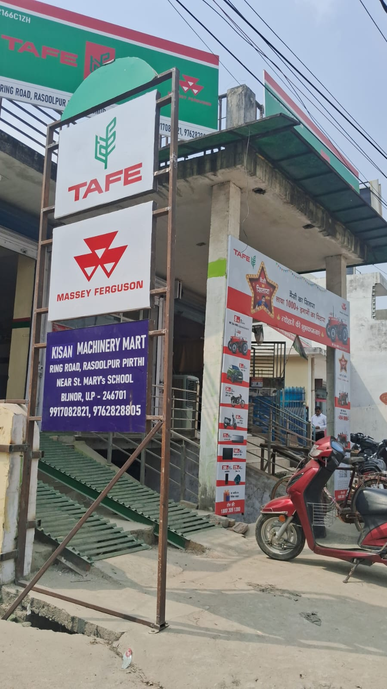
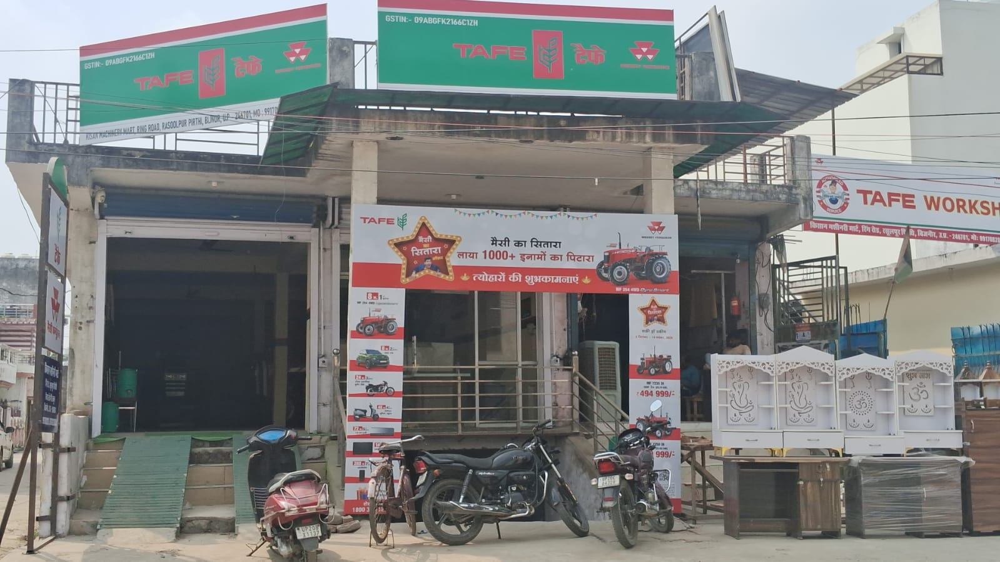

01 / ट्रैक्टर मॉडल
01 / ट्रैक्टर मॉडलकिसान मशीनरी मार्ट · बिजनौर
किसान का भरोसा • बिजनौर
बिजनौर में एकमात्रMassey Ferguson एजेंसी
किसान के भरोसे का ट्रैक्टर • सही सलाह • बेहतर सेवा
WhatsApp
आपकी स्थानीय डीलरशिप
बिजनौर · उत्तर प्रदेश
किसान मशीनरी मार्ट
बिजनौर · उत्तर प्रदेश
किसान काभरोसा✳
किसानों का भरोसा
सही ट्रैक्टर की सलाह
बेहतर सेवा
स्थानीय भरोसा
BUILT FOR YOUR FARM
खेत के लिए सही साथी
मॉडल, कीमत और उपलब्धता की जानकारी के लिए सीधे पूछें।
01 / ट्रैक्टर मॉडल 02 / खेत के लिए
02 / खेत के लिए 03 / उपलब्ध विकल्प
03 / उपलब्ध विकल्पA LOCAL PARTNERसिर्फ ट्रैक्टर नहीं,
सिर्फ ट्रैक्टर नहीं,
सही सलाह भी।
बिजनौर में एक ऐसी टीम जो आपकी जरूरत सुनकर विकल्प समझने में मदद करे।
काम के मुताबिक मार्गदर्शन
खरीदने से पहले मॉडल और उपयोग पर स्पष्ट बातचीत।
स्थानीय डीलरशिप सहयोग
बिजनौर में आमने-सामने बात और जानकारी।
खरीद से जुड़ी सहायता
कीमत, फाइनेंस और उपलब्धता पर टीम से पूछें।
 खेतों की पसंद
खेतों की पसंदFIELD NOTES
खेत से शोरूम तक
किसान की जरूरत से लेकर सही ट्रैक्टर के चुनाव तक
KISAN MACHINERY MART
A LOOK AROUND OUR DEALERSHIP
बिजनौर की झलक
हमारे शोरूम और ट्रैक्टरों की असली तस्वीरें।



आपकी स्थानीय डीलरशिपबिजनौर में
बिजनौर में
मिलते हैं।
ट्रैक्टर, कीमत या फाइनेंस के बारे में बात करने के लिए संपर्क करें या शोरूम आएं।
किसान मशीनरी मार्ट
बिजनौर, उत्तर प्रदेश
चक्कर रोड, सेंट मेरी स्कूल और रेलवे फाटक के बीच
Google Maps पर दिशा देखें